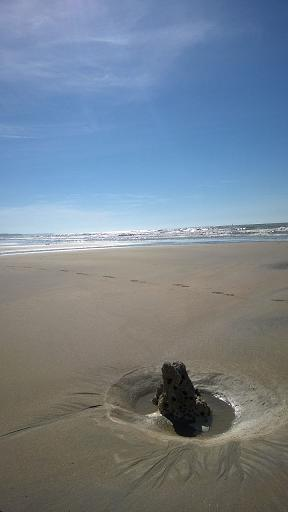

CHANT DE LA SIRENE 3
Close la bouche oisive où habite un regret
Comme un jet sourd et tu s'immobilise, cloue
Un brasier suffoquant par les crins et l'attrait
Du ventre à nul encore accessible, se tait...
Et tout un flanc ployé dit hantise une roue.
Puis l'essor de deux pics blancs et grêles, le cri-
Et s'apaise savante et heureuse et sourit,
Ecume du secret qui pèse, ploie et noue.
Michel Galiana, 24 mai 1978
.
.
.
|

|
MERMAID'S SONG 3
Closed, the idle mouth, harbouring a regret
As if dyking a flow, stands still and it contains
A stifling inferno in hairs and appeals set
In the stomach that is still denied, and refrains...
And a whole swaying side unfurls its haunting fan.
Then two white and slim hills soaring, at last the cry-
And the learned and happy mouth quietens down and smiles,
Foam of the secret that presses and ties and bends.
24th March 1978
Transl. Christian Souchon, 2015
Photo: Dominique Borderie, 2015
|